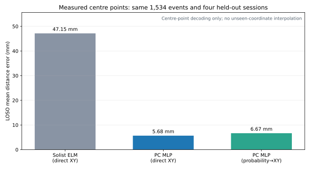

昨日までの実機推論モデルと、今日収録・選別した4セッションから作成したモデルを同じページで比較する。サンプリング周波数比較に加え、Solist AIのモデル制限を外したPC側NNでもXY直接回帰をセッション単位で検証した。
6.4 kHz・FFT 128入力。新4セッションLOSO平均。
全層学習MLPの3初期値アンサンブル。Solist型は47.15 mm。
新4セッションの有効波形。各クラス176～200件。
| 項目 | 旧モデル v1 | 今日の分類モデル | 今日のXYモデル |
|---|---|---|---|
| 目的 | 8エリア分類 | 8エリア分類 | x, yの2値直接回帰 |
| 原記録 | 25.6 kHz・512点・20 ms | 25.6 kHz・2,048点・80 ms | |
| 採用前処理 | 25.6 kHzの時間波形 | FIR後1/4分周・6.4 kHz FFT | FIR後1/4分周・6.4 kHz 時間＋FFT |
| 入力 | 時間波形128値 | FFT帯域128値 | 時間64値＋FFT帯域64値 |
| 構造 | Input 128 / Hidden 32 / Output 8 / Hard sigmoid / MSE | Input 128 / Hidden 32 / Output 2 / Sigmoid / MSE | |
| 固定条件 | Solist-AI Seed 1 alpha / L2 0.1 / Bfloat16境界評価 | ||
| 評価方法 | 2セッション相互評価 | LOSO 4-fold（3セッション学習・未学習1セッション評価） | |
| 主結果 | 平均96.67% | 平均98.63% | 平均距離47.15 mm |
| 状態 | 実機推論済み | 次期実機候補 | 研究用・現時点では不採用 |
| モデル | セッション | 件数 | クラス件数 |
|---|---|---|---|
| 旧v1 | 20260717_224111_5989080d20260717_230800_09e74326 | 781 | 旧2セッションの選別済み中心打点 |
| 今日 | 20260718_074916_84b183d220260718_080557_9524983c20260718_081909_9dd2d78520260718_084143_ac8e6d56 | 1,534 | 176 / 187 / 196 / 200 / 193 / 199 / 197 / 186 |
023a63a013ecd7c1cb89342ddf709ede4d4891acf916cdddbc1c93c7c8c3b3ea。12.8 kHzと6.4 kHzは、25.6 kHz原波形へKaiser FIRアンチエイリアス処理を施してから1/2・1/4分周した。単純間引きは使用していない。
| 実効周波数 | 特徴 | 8クラス正解率 | XY平均距離 | XYエリア正解率 |
|---|---|---|---|---|
| 25.6 kHz | 時間 | 98.24% | 59.30 mm | 61.67% |
| 25.6 kHz | FFT | 86.96% | 71.19 mm | 43.94% |
| 25.6 kHz | 時間＋FFT | 92.96% | 72.39 mm | 50.33% |
| 12.8 kHz | 時間 | 97.72% | 59.95 mm | 61.47% |
| 12.8 kHz | FFT | 89.50% | 71.83 mm | 44.52% |
| 12.8 kHz | 時間＋FFT | 97.46% | 56.24 mm | 60.56% |
| 6.4 kHz | 時間 | 97.59% | 59.54 mm | 62.91% |
| 6.4 kHz | FFT | 98.63% | 55.69 mm | 60.37% |
| 6.4 kHz | 時間＋FFT | 98.50% | 47.15 mm | 69.95% |
| 未学習の評価セッション | 評価件数 | 正解率 | Balanced accuracy |
|---|---|---|---|
074916 | 384 | 97.40% | 97.40% |
080557 | 391 | 98.98% | 98.97% |
081909 | 362 | 98.90% | 98.81% |
084143 | 397 | 99.24% | 99.25% |
横4列の識別が主な誤差。直接回帰では中間値へ寄りやすい。
上下2段は比較的分離できている。
25 mm以内は26.34%。連続位置推定としては不足。
同じ1,534波形、同じ6.4 kHz時間64＋FFT 64入力、同じLOSO 4-foldのまま、固定32隠れ層を全層学習の256－128－64隠れ層へ置き換えた。74,306パラメータを学習する直接XY MLPを3初期値で評価し、評価セッションに対する予測を平均した。

| モデル | 学習可能パラメータ | 平均距離 | 中央値 | 90%点 | 50 mm以内 |
|---|---|---|---|---|---|
| Solist型・直接XY | 64（出力beta） | 47.15 mm | ― | ― | 62.84% |
| PC MLP・直接XY | 74,306（全層） | 5.68 mm | 3.67 mm | 11.94 mm | 99.80% |
| PC MLP・確率→XY | 66,952（全層） | 6.67 mm | 2.65 mm | 14.00 mm | 97.91% |
6.4 kHz・FFT 128入力の8クラス分類。8出力をCPU側argmaxし、クラス中心を座標として使用する。
PC側研究モデル全層学習のXY直接回帰。中心点復号では表現力の効果を確認したが、未知座標の補間は未検証。
次工程中心＋四隅の実測データでPC側NNを再学習し、別セッションの未学習格子・境界点で連続座標性能を評価する。
artifacts/sampling_experiment_20260718/comparison_report.json — 全条件・全foldの数値artifacts/sampling_experiment_20260718/6400hz_fft/classification/model.npz — 最良8クラスモデルartifacts/sampling_experiment_20260718/6400hz_hybrid/xy/model.npz — 最良XYモデルartifacts/sampling_experiment_20260718/official_simulator_packages/ — 公式Simulator投入用CSVdocs/sampling-experiment-20260718.md — 再現条件と詳細レポートartifacts/pc_xy_regression/direct_xy_ensemble.joblib — PC側の全データ学習済みXYアンサンブルweb/assets/experiment/pc-xy-regression/pc-xy-regression-results.json — PC側NNの全fold・全初期値結果docs/pc-xy-regression.md — PC側NN比較の詳細